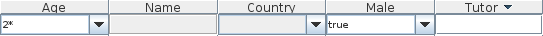

Download
TableFilter is open source, under MIT license.
Starting with version 3.1, the sources are hosted at Google code, available as the project tablefilter-swing
The binaries are included in the central maven repository. This means that, on a maven project, it can be used by adding the dependency to net.coderazzi.tablefilter-swing, or to net.coderazzi.tablefilter-swing-java5, if the version with support for Java 5 is needed.
Outside a maven project, the binaries, (together with sources and javadoc) can be downloaded directly from the maven repository. The last versions are hosted at:
Please note that version 3.0 is a major rewriting of the library and breaks compatibility with previous versions. For this reason, the latest 2.x version is still available here:
License
TableFilter is available under the MIT license.
Copyright (c) 2007 Luis M. Pena - lu@coderazzi.net Permission is hereby granted, free of charge, to any person obtaining a copy of this software and associated documentation files (the "Software"), to deal in the Software without restriction, including without limitation the rights to use, copy, modify, merge, publish, distribute, sublicense, and/or sell copies of the Software, and to permit persons to whom the Software is furnished to do so, subject to the following conditions: The above copyright notice and this permission notice shall be included in all copies or substantial portions of the Software. THE SOFTWARE IS PROVIDED "AS IS", WITHOUT WARRANTY OF ANY KIND, EXPRESS OR IMPLIED, INCLUDING BUT NOT LIMITED TO THE WARRANTIES OF MERCHANTABILITY, FITNESS FOR A PARTICULAR PURPOSE AND NONINFRINGEMENT. IN NO EVENT SHALL THE AUTHORS OR COPYRIGHT HOLDERS BE LIABLE FOR ANY CLAIM, DAMAGES OR OTHER LIABILITY, WHETHER IN AN ACTION OF CONTRACT, TORT OR OTHERWISE, ARISING FROM, OUT OF OR IN CONNECTION WITH THE SOFTWARE OR THE USE OR OTHER DEALINGS IN THE SOFTWARE.
The source distribution contains, in addition to the library's source code, some tests. These tests make usage of a general icon library (FamFamFam), and, in case of the Java 1.5 version, of a open source class called TableSorter.java, which retains the original copyright.
As of version 1.2.0, there are also icons in the library, to facilitate its usage under Gui editors. These icons come from the FamFamFam silk icon library, licensed under a Creative Commons Attribution 2.5 License.
History
Version 3.1.1 ( 13th May 2010 )
- Solved bug: autoOptions / autoSelection not propagated properly from the FilterSettings.
- Updated example to use autoOptions by default.
Version 3.1.0 ( 10th May 2010 )
- There are no code changes from 3.0.1; this release was required due to the mavenization of the project. It is now available directly from the central maven repositories.
Version 3.0.1 ( 5th May 2010 )
- The filter's background and foreground colors can be defined directly in the FilterSettings class.
- The header's background color is not defined anymore as the table's header, but averaged with the table's background. In some platforms, the look is much nicer.
- The arrow to show the popup looks now the same if the filter is disabled or if the popup cannot be shown -because there is no entries to show-.
- The arrow to show the popup is now placed shifted to the bottom.
- Integrated Types's parser into the FilterSettings class.
- Solved error comparing dates.
- Solved error where the focus would remain on the editor, even if disabled.
- Whole build process has moved to ant
Version 3.0.0 ( 28th April 2010 )
- Version 3.0.0 is a major rewriting of the library. It is mostly focused to the Gui, but it affects to many internal aspects. In general, it should be much simpler using the library, for the programmer and for the user. The major changes are listed below.
-
Look and feel
Previous versions of TableFilter could look -depending on the platform and look and feel-, like:  The inconsistencies would appear when the user mixed different types of editors on the same header. The most usual headers were implemented using combo boxes, which could be editable or not. As far as the platform would show both kind of editors in a similar way, the appearance was fine. In Windows XP, for example, both look almost the same, although the background is different; but on Os X, it would look as bad as: Even if the user didn't mix editor types, the editable combo box looks here
pretty bad (is the age and male columns in the figure).
Even if the user didn't mix editor types, the editable combo box looks here
pretty bad (is the age and male columns in the figure).
The new version solves these inconsistencies by implementing its own editor component, looking as: Where there were before 4 types of editors -plus any custom creation by
the user-, there is now only one, covering the whole functionality provided
before by the 4 types:
Where there were before 4 types of editors -plus any custom creation by
the user-, there is now only one, covering the whole functionality provided
before by the 4 types:
- Each editor has its own history, which can be disabled.
- In addition to historic items, it is possible to specify options for each editor, or even obtaining these options automatically from the table's content.
- The editor's content can be edited, and autocompletion is built-in.
- An editor can be defined as non editable. In this case, the input can only match one of the existing options.
- The editor's content can use custom renderers, like in the following figure.
-
Custom types
Previous versions required the usage of the interface net.coderazzi.filters.parser.ITypeBuilder to handle non primitive types, including Dates. Its only method, parse, would produce an Object from a String, very much as the standard java.text.Format class does. While writing the new version, I uncovered some errors on the initial implementation, realizing that the filtering requires, not only parsing provided text, but also to format objects into Strings.
What this means is that the net.coderazzi.filters.parser.ITypeBuilder type is now gone, replaced by usage of java.text.Format instances. -
Filter parser
The original version of TableFilter allowed the definition of complex expressions. For example, for a table having a column called age and other called name, the user could enter an expression such as:age > 25 & age < 30 & name ~ Fred*
This is very convenient, even if it could be misleading: the previous expression could be entered on any column, not just on the age or name columns. But the main problem is that the parser was not very configurable, defined quite exotic operators, and included some obvious errors -using of spaces, for example, would normally lead to problems-.
In version 3.0, the distributed parser only allows basic filtering expressions, without variable names. The original parser could still work -the interface is mostly the same-, but I have preferred to discontinue it. If it were still needed, I will favor implementing a correct parser instead.
And, of course, the user can still use its own parser, as the interface has only slightly changed.
Version 2.2.0 ( 12th April 2010 )
- This version reintroduces compatibility with Java 5, temporarily excluded on version 2.1, although not all features are available in the old Java version; more specifically, autoselection will not be supported under Java 5. In addition, many tests for the Java 5 version have been rewritten, as they contained important bugs
- Concerning Java 6, this release solves a minor bug, as not all resources would be released when a new table model was applied to a table filter.
Version 2.1.2 ( 26th January 2010 )
- Added a new singleton instance to facilitate updating the default settings of the library (what can be achieved, anyway, using system properties).
- Added an autoselection mode, enabled by default. If the current filtering filters out all rows in the table but one, that row become automatically selected. Likewise, selected rows are automatically de-selected when they are filtered out (this is the usual operation mode in the Java 6 table sorter)
- Modified the default behaviour of the filters, to use wildcard expressions when the user does not specify any operator.
- All the filter editor constructors where the filter position (table's column) was specified, are now deprecated.
- Solved bugs related to setting the header visible or hidden, and enabled or disabled
- Added new Position type NONE, to ensure that the header is not automatically placed -if that is so required-.
Version 2.0.1 ( 13th November 2009 )
-
This version is limited to defining properly the properties that
define the default behaviour. Although already partially included in
version 2.0.0, the inclusion was not complete and buggy in the case of
some of these properties.
The full list of system properties that can be defined to override the default TableFilter behavior is listed here. - A new example is provided to test the extended behaviour.
Version 2.0.0 ( 1st September 2009 )
-
This version extends some public interfaces, adding functionality. However,
it means that users that implemented their own table filter editors or text parsers
must now implement
the new interfaces, so the compatibility is broken. Most users uniquely use the existing
table filter editors and parsers, and will not face any compatibiliy issues:
-
Changed interface on
ITableFilterEditor
- It is possible to retrieve the applied filter on any table's column
- It is also possible to set dynamically the filter on any column
- Its is supported, through the use of the new ITableFilterEditorObserver interface, to be notified of changes on the filter's editor.
-
Changed interface on
IFilterTextParser,
including two methods already defined in the generic implementation in
FilterTextParser:
- Define a type builder for specific user types.
- Define a comparator for any type.
- Added interface on ITableFilterHeaderObserver, to observe events on the TableFilterHeader.
- Dates are now automatically handled in the library.
- The user can provide properties that override some default behaviours. These properties have been later redefined in 2.0.1.
- Bug solved: usage of renderers on TableChoiceFilterEditor would likely drive to AWT exceptions.
- Bug solved: changing the table or the model, using the TableChoiceFilterEditor on a column with boolean or enumeration types, would hide all the elements, as if they would not validate the filter -even if empty-
- UserFilters are automatically enabled
- Extended examples to show how to listen for events on the table editors
-
Changed interface on
ITableFilterEditor
Version 1.5.0 ( 7th August 2009 )
- Changes; this release improves on the usage of the
TableChoiceFilterEditor,
that is, the editor filter that offers the user a list of the different options
as found in the table model:
- The choices are automatically updated when new entries are included in the table. That is, new values are added to the filter's choices; however, old values, that are removed or replaced out of the table model, are not removed from the filter's choices.
- In addition, the comparator function used to set the order among the choices in the editor, is replaced, to use automatically the comparison method supplied on Comparable classes (if supplied, that is)
Version 1.4.1 ( 4th July 2009 )
- Changes:
- Bug solution: in specific conditions, the header would fail to display.
- Bug solution: filters could be added to the default TableFilterHeader, but it would be needed to invoke reportFilterUpdatedToObservers(), a protected method: therefore, clients had to be defined as separate classes. Adding now a user filter triggers automatically the report method.
- Added commodity class UserFilter to create external filters.
- Added serialization ids to all serializable classes.
Version 1.4.0 ( 10th June 2009 )
- Changes:
- The whole namespace is migrated from byteslooser.com to coderazzi.net
- Removing Java compilations warnings from source.
Version 1.3.0 ( 17th February 2009 )
- Changes:
- Automatic layout management for the filter header.
On previous versions, the user had to place manually the header in the Gui container,
as detailed here, while now is is enough to
instantiate the header and set the associated table:
TableFilterHeader filterHeader = new TableFilterHeader(table);
- Version 1.3.0 keeps backwards compatibility: if the TableFilterHeader is explicitely included in some Gui container, the default behaviour to automatically setup the filter header close by the table header is deactivated.
- Automatic layout management for the filter header.
On previous versions, the user had to place manually the header in the Gui container,
as detailed here, while now is is enough to
instantiate the header and set the associated table:
Support, issues, forums
Issues, or bugs, can be reported at the Google Code host site.
Discussions can be carried at the associated Google group forum.
Would you require commercial support on this library, or specific customizations, please contact lu@coderazzi.net